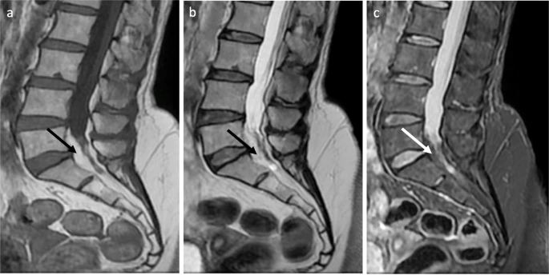

Adapted from: Ramdani H, Jidal M, Saouab R, Sahri IE, En-Nouali H, El Fenni J. Spinal epidural lipomatosis, International Journal of Emergency Medicine (Published March 24, 2022; Accessed on 03 Jan 2026).
1) Description of Measurement
Epidural fat thickness refers to the anteroposterior (AP) measurement of adipose tissue in the spinal epidural space, which can compress the thecal sac and nerve roots. This is most relevant in spinal epidural lipomatosis, a condition characterized by excessive accumulation of unencapsulated fat that can compress neural structures and associated with obesity, chronic steroid use, and endocrinopathies.
2) Instructions to Measure
Use axial T1-weighted MRI where fat is hyperintense. Measure the anteroposterior (AP) thickness of epidural fat at the level of maximal compression or at specific vertebral levels (commonly L4-5 or at the superior endplate of S1). The measurement captures the AP diameter of epidural fat located both ventrally and dorsally to the dural sac. Multiple indices are used to quantify the degree of fat accumulation:
3) Normal vs. Pathologic Ranges
Borré et al. defined normal epidural fat as an EF/SC index ≤40% or a DuS/EF index ≥1.5. An absolute epidural fat thickness >7 mm in the region of compression is considered pathologic, particularly when associated with obesity (BMI >27.5 kg/m²).
SEL is graded based on severity (Borré et al.):
Clinical significance varies by grade: Grade I is typically asymptomatic, Grade II is symptomatic in only 14.5% of cases, and Grade III is universally symptomatic.
Patients with acute cauda equina syndrome typically have EF:SC ratios of around 47%, while those with chronic symptoms average 72%.
4) Important References
Borré DG, Borré GE, Aude F, Palmieri GN. Lumbosacral epidural lipomatosis: MRI grading. Eur Radiol. 2003 Jul;13(7):1709-21. doi: 10.1007/s00330-002-1716-4. Epub 2002 Dec 13. PMID: 12835988.
Sasagasako T, Hanakita J, Takahashi T, Minami M, Kanematsu R, Tomita Y. Clinical Implications of the Epidural Fat Thickness in the Management of Lumbar Spinal Stenosis. World Neurosurg. 2021 Feb;146:e205-e213. doi: 10.1016/j.wneu.2020.10.075. Epub 2020 Oct 19. PMID: 33091643.
5) Other info....
The compressed thecal sac assumed a “Y” shape, a characteristic finding of grade III spinal epidural lipomatosis, as described by Borré et al.